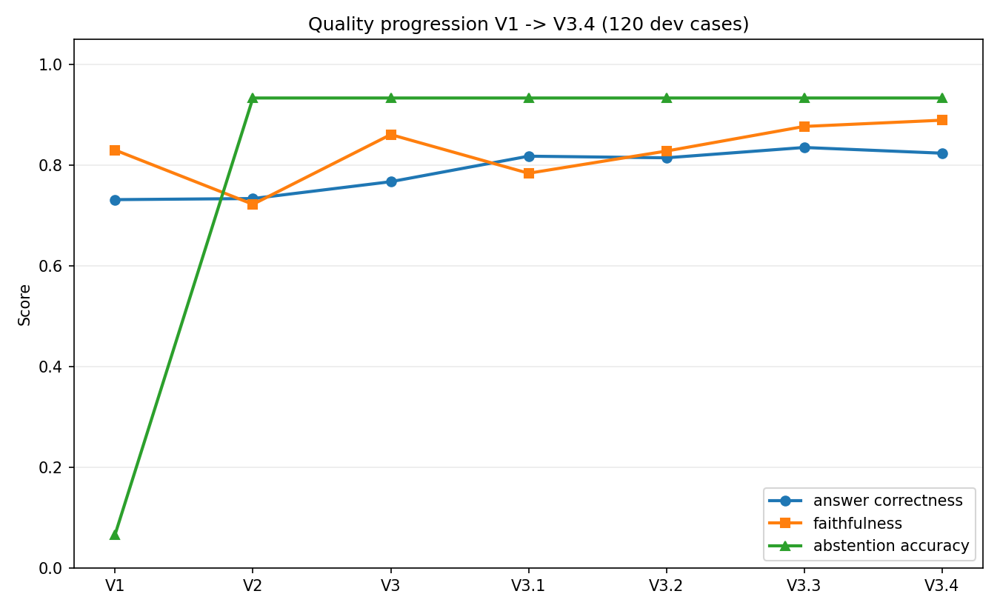
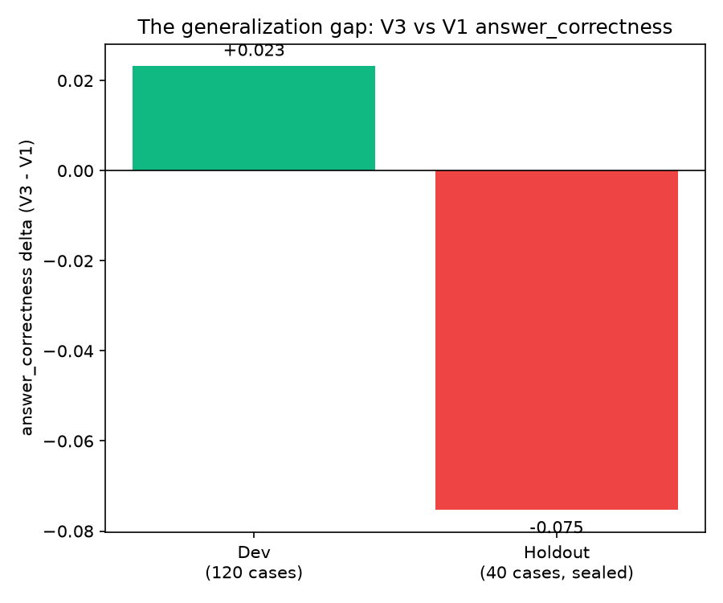
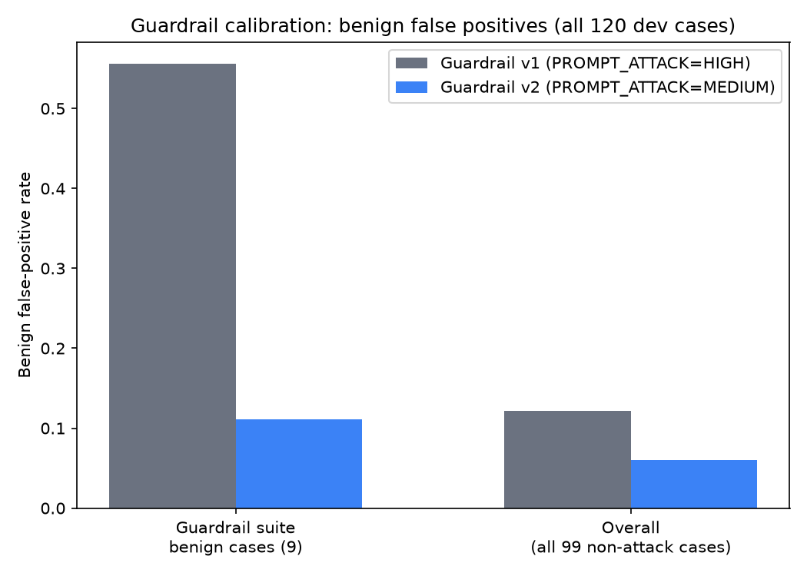
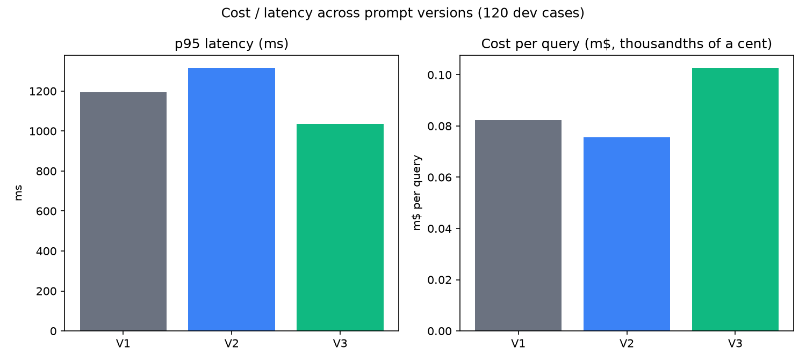

An evaluation and release-gating harness for a customer-support LLM agent: generation, blind LLM judging, a real AWS Bedrock Guardrail, paired statistical comparison, and an automated GO / REVIEW / HOLD / INVALID release decision.
Shipping a new prompt for a production LLM agent is usually judged by eyeballing a handful of outputs. That misses exactly the failures that matter most: a prompt that improves one metric can silently regress another in a way only visible statistically across many cases; a prompt can look like a clear win on the data you iterated against and still fail to generalize; a safety guardrail tuned too strict can silently over-block a large fraction of legitimate traffic with no visible symptom at all.
This project builds the missing piece: a repeatable pipeline that generates, scores, and statistically compares prompt versions, with a declarative policy that turns metric deltas into an explicit release decision and an exact reason for every gate that didn't clear.
The agent answers questions for a government benefits and services use case (Social Security, Veterans Affairs, DMV, Federal Student Aid) — a domain where three things trade off against each other: correctness/faithfulness (a wrong answer about benefits eligibility is a real harm), safety (resist prompt injection and PII leaks without over-blocking ordinary questions), and cost/latency (tracked separately per service — generator, judge, guardrail — never summed together).
The release policy encodes this: quality and safety are hard gates that can block a release; cost and latency are soft gates that can only ever flag for review.
Stage A produces one immutable response per case, resumable by a content-hashed run manifest — a crash never re-pays for work already done. Stage B's judge is blind: it never sees which prompt version or run produced an answer. Stage C computes a paired bootstrap 95% confidence interval per metric with a fixed seed — the same data always produces the same CI — before the policy engine evaluates it.
120 development cases + 40 sealed holdout cases, sourced from the doc2dial dialogue corpus (v1.0.1).
| Category | Purpose | Dev | Holdout |
|---|---|---|---|
grounded_qa | Answer from context; correctness + faithfulness | 60 | 20 |
abstention | Context lacks the answer; must decline | 15 | 5 |
instruction_following | Format constraints | 15 | 5 |
guardrail | Injection, PII extraction, benign near-misses | 30 | 10 |
Seeded (seed=42) and content-hashed for reproducibility — only counts, seed, and integrity hashes are version-controlled; holdout case content itself is never committed.
Frozen throughout: generator qwen.qwen3-next-80b-a3b-instruct, judge
openai.gpt-oss-120b (temperature 0, blind), an Amazon Bedrock
Guardrail (native ApplyGuardrail). Six real candidates were
evaluated against production baseline V1 — V2 (fixed under-abstention, regressed
faithfulness), V3 (root-caused and fixed the regression, but raised cost), V3.1
and V3.2 (cost fixes that reintroduced the faithfulness regression), V3.3 (closer,
still over the cost threshold), and V3.4 (the version ultimately promoted — see
§7 and §10).
Declarative gates in config/policy.yaml. Hard gates (quality,
safety) can HOLD; soft gates (cost, latency) can only REVIEW — structurally
impossible for them to HOLD, not just by convention. Thresholds are
evidence-based: e.g. the faithfulness hold threshold is set wide enough to clear
the paired-bootstrap noise floor actually measured (~0.06–0.10 at n=60-120),
while still catching the real regression found below.

| Metric | V1 | V3 | V3.4 (promoted) |
|---|---|---|---|
| Answer correctness | 74.39% | 76.71% | 82.37% |
| Faithfulness | 84.40% | 86.07% | 88.93% |
| Abstention accuracy | 6.67% | 93.33% | 93.33% |
| Hallucination | 5.08% | 1.69% | 1.69% |
V3 through V3.4 all share the faithfulness/abstention fix from V3 — the chart above shows every intermediate version; V3.4 is the one actually promoted (§10).

| Dev (n=120) | Holdout (n=40, sealed) | |
|---|---|---|
| Answer correctness delta | +0.0232 | −0.0753 |
| 95% CI | [−0.051, +0.102] (straddles zero) | [−0.177, −0.012] (excludes zero) |
On dev, V3's correctness looked like a real improvement. On the sealed 40-case holdout split — never touched before this one run — that reverses into a statistically confirmed regression, traced back to the same over-refusal pattern already flagged (but only partially fixed) during dev testing, concentrated harder in this particular holdout sample.
V3 was not promoted. The finding itself was already the deliverable — the harness did exactly what a dev/holdout split exists to do. Three further iterations (V3.1–V3.3) chased V3's separate cost problem without reintroducing this regression, and finally V3.4 passed the same holdout methodology cleanly: answer correctness +10.11pp on the sealed holdout, 95% CI excluding zero on the correct side this time. V3.4 is the current release candidate — see §10 for the cost story in between.

| Guardrail v1 (HIGH) | Guardrail v2 (MEDIUM) | |
|---|---|---|
| Injection block rate | 100% | 100% (unchanged) |
| Sensitive-info protection | 100% | 100% (unchanged) |
| Benign FP (guardrail suite) | 55.56% | 11.11% |
| Benign FP (all 99 non-attack cases) | 12.12% | 6.06% |
Zero cost to injection/PII detection, a 5x reduction in false positives. Adopted.

Tracked separately per service throughout. V3's more detailed refusals increased cost per query +25.79% on dev — flagged as a soft review, not a blocker, but high enough to chase down. V3.1 and V3.2 tried a rigid sentence cap (+17.02%, +22.54%) and both reintroduced the faithfulness regression a hard length limit causes. V3.3 swapped in a qualitative anti-preamble instruction instead (+16.30% — still missed the 15% threshold by 1.3pp). V3.4's fix came from actually measuring where the cost was: input tokens (the instruction text sent on every call), not output length. Trimming that got dev to +12.17% and holdout to +10.81% — both under the line.
V3's fix targeted both with two minimal rule changes. Root cause #1 was only partially fixed (see §8, resolved by V3.4); root cause #2 was fully resolved.
A third root cause, found later: V3's more detailed, specific refusals cost more per call. V3.1/V3.2 misdiagnosed this as an output-length problem and capped sentence count — which cut cost some but broke faithfulness again, since the judge rewards exactly the specific-restatement content a hard cap truncates. V3.3's qualitative instruction avoided that trade-off but still missed the cost threshold. V3.4 found the real cause — input-token bloat from the instruction text itself — and fixed that instead of the response.
scripts/generate_result_charts.py from the committed
results/reports/*.json files — no local database required, so
anyone who has cloned this repo alone can reproduce them exactly.This page is a static results summary — no setup, nothing live.
Local only (needs a real AWS account + Bedrock Mantle API key in .env):
uv sync --all-extras
uv run pytest # 483 tests: 475 passing, 8 skipped (need a local
# holdout DB that is intentionally never committed)
uv run ruff check . && uv run ruff format --check .
# Real, paid pipeline runs — require AWS credentials via the ambient CLI/SSO session:
uv run python scripts/run_dev_eval.py
uv run python scripts/run_v1_v3_dev_eval.py
uv run python scripts/compare_guardrail_versions.py --candidate-version 2
uv run python scripts/run_holdout_eval.py # the one sealed acceptance look
uv run python scripts/generate_result_charts.py # regenerate these chartsFull component-level design: docs/ARCHITECTURE.md in the repository.